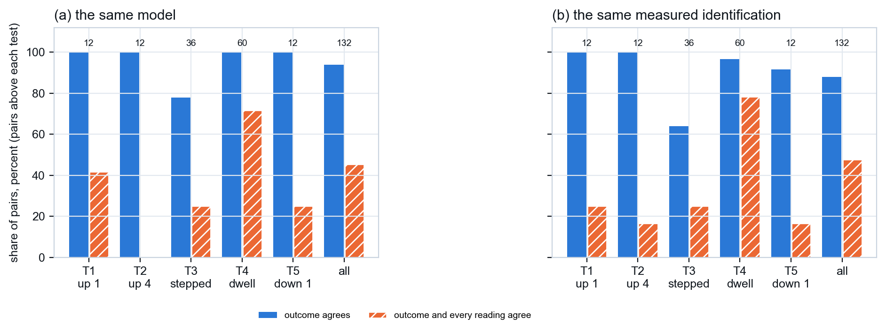

Hertzforge Journal
The MIMO Sine Suite of the Open Benchmark Set: Swept, Stepped and Dwell Problems on the Random Suite's Structures, Scored by IEC 60068-2-6 and Method 514.8
Proposed Standard
EvidenceSimulator. A specification of a suite of simulated multi-shaker sine problems, with what its 380 problems and 230 held-back problems show before any law runs, and properties of the problems pooled over the control laws: 4,140 closed-loop runs on the shipped Hertzforge MIMO Sine engine and 2,200 in a Python restatement of its loop, on the study's structures, with an audit on the held-back structures; one sequence of measurement noise a problem and test. No hardware tests.
Abstract
The Open Benchmark Set gives control laws for multi-shaker vibration tests shared simulated problems, a fair run and a fixed scorecard. This article proposes its third suite, MIMO Sine: sine problems on the MIMO Random suite’s structures, 380 in all, with five tests (up sweeps at one and four octaves a minute, a down sweep, a stepped sine and a dwell at the first resonance) and a test with a limit channel. Full level is sized so that a steady tone moves each structure’s modes as far as Random’s full level does. Every specification is projected onto what the shakers can reach, the gap is stored with the problem, and the drive is scaled so that the ideal full-level drive peaks at 1 V with a ceiling 6 dB over it. Runs are scored by the amplitude tolerances of IEC 60068-2-6 and MIL-STD-810H Method 514.8, read from the standards’ text, under several readings; phase is reported, not judged. The suite runs in two versions, on the shipped Hertzforge engine and in a Python restatement of its loop, which agree on the outcome of 124 of 132 compared pairs of runs. Pooled over the laws, every claim the study makes about the structure says the level-dependent structures are harder, most of all on the down sweep. No law’s median sweep or stepped sine stays inside the IEC check-point band at every point on any kind of structure, while the dwell does on every kind. Everything here is simulation.
Summary
A sine test on a shaker plays one tone at a time, sweeping or stepping it through the band or holding it at a resonance, and corrects the drive as it goes. With several shakers on one article, each shaker moves every accelerometer, and a control law decides every drive at once. The Open Benchmark Set (Cross 2026f) lets such laws be compared on shared simulated problems. Its MIMO Random suite is published (Cross 2026a) and its MIMO Shock suite is proposed (Cross 2026e). This article proposes the third suite, MIMO Sine, at draft 0.1.
- The same structures as Random. Each sine problem holds the Random problem’s structure file byte for byte, checked by its SHA-256 hash. A structure number means the same structure in all three suites.
- Full level means the same thing. At full level a steady tone moves the structure’s modes as far, on the median, as the Random problem’s full level does (Section 2.4).
- Five tests and a limit test. Up sweeps at 1 and 4 octaves a minute, a down sweep at 1 octave a minute, a stepped sine at 12 steps an octave and a dwell at the first resonance, each climbing a ladder of levels to full level, and the slow up sweep again with one limit channel (Section 2.5).
- A reachable reference and a fixed drive scale. The flat specification is projected onto what the shakers can reach; the gap is stored as the declared deviation, a median of 15.61 dB RMS on the 3 x 12 system and 0.09 dB on the 6 x 6 system (Section 2.3). The drive is scaled so that the ideal full-level drive peaks at 1 V, with a ceiling 6 dB over it (Section 2.7).
- Tolerances from IEC 60068-2-6 and Method 514.8. The scorer reads the IEC check-point band (25 percent to 500 Hz, 50 percent above), the IEC reference point (15 percent) and the Method 514.8 composite (10 percent), with the frequency, rate and duration tolerances; phase is reported, not judged (Section 3).
- Two versions. The Hertzforge version runs the shipped MIMO Sine engine; the Python version restates its loop, its pipeline delay of 264 samples included. They agree on the outcome of 124 of 132 compared pairs of runs given the same model (Section 4).
- The study and its claims. The study ran 4,140 runs in the Hertzforge version and 2,200 in the Python version. A fixed rule turned their readings into 2,544 claims before any run on the 230 held-back problems, and the audit tests each claim there (Section 6).
- What the problems show. Every one of the 213 claims about the structure says the level-dependent structures are harder; the down sweep separates the tiers most (Section 7.1). No law’s median sweep or stepped sine stays inside the IEC check-point band at every point, on any kind of structure, in either version; the dwell’s does on every kind (Section 7.2).
- The audit. On the held-back structures, 2,086 of the 2,544 claims hold, 400 hold weaker (the direction held and the size fell outside the study’s quartiles) and 58 do not hold (Section 6.4).
1. Why a Sine Suite
IEC 60068-2-6 and MIL-STD-810H Method 514.8 both specify the sine test, with tolerances on the amplitude at each control point and on the average of several, on the frequency, on the sweep rate and on the duration (International Electrotechnical Commission 2007; U.S. Department of Defense 2019). A survey in this journal collects what is published on sine control with several shakers and finds the published laws thin on evidence: a few table, beam and simulation tests, none on a structure whose resonances move with level; and no standard it read sets a phase tolerance or a sine clause for several exciters (Cross 2026b).
A sine test asks something of a control law that random and shock do not. The tone moves, so the law always works near a frequency it has just left; at a resonance the response changes by tens of dB within a fraction of an octave; and a structure whose joints soften with level changes its resonances as the tone reaches them. A law that holds the reference on a linear structure may lose it on the same structure at full level, and the place it loses it is the resonance, where the test matters most.
The suite is built on the Random suite’s structures so that a law’s results on one structure differ only by the test. It does not add a new simulator, a new level rule or a new structure generator. Sections 2 and 3 say what it adds; Section 4 says how its two versions are checked against each other; Sections 5 to 7 say what the problems show.
2. The Problems
2.1 The Structures
Every problem is built on a problem folder of the MIMO Random suite, version 0.2 (Cross 2026a), and holds that folder’s structure.json byte for byte. Before using it, the problem maker checks its SHA-256 hash against the Random problem’s own record. The structure is the frame article of the Open Benchmark Set (Figure 1, reproduced from (Cross 2026f)): a box of aluminum tubes with three cantilevered components, three lumped masses and a hardening member, given as its modes of vibration, 103 to 136 of them on the study’s problems.
![Three shaded views of a CAD model. Left: a rectangular box of square aluminum tubes with two long rails and cross members in each of the top and bottom frames joined by four corner posts; three dark blocks are lumped masses, three short tubes carry small blocks marked with orange triangles, open black squares mark the four mount points, and an orange star marks a small orange block on a gray bracket at one top corner, the hardening member. Middle: a close-up of that member: an orange rectangular mass spans two thin red-brown strips whose ends are clamped on a gray steel bracket that stands on a chassis tube; text labels name the tuned mass, the two thin strips, the steel bracket and the chassis tube. Right: the article hanging on four thin cords, with six blue cylindrical shakers, each with a black arrow showing its force direction; blue filled circles mark control gauge points, open orange diamonds mark held-out gauge points and orange triangles mark the tip gauges, the member's mid-span included.](figures/fig1_article.png)
This figure: fig_article_parts.csv fig_article_rig.csv Picture (PNG)
The suite uses the five systems of the Random study (Cross 2026c), written here as shakers x control gauges: 3 x 12, 6 x 12 and 12 x 24, with more control gauges than shakers, and 6 x 6 and 12 x 12, square. Problem names put the control gauges first, as the Random suite does: frame-12x3, frame-12x6, frame-24x12, frame-6x6 and frame-12x12. Each system is run on the linear structure and on the same structure with joints that soften and a member that hardens with level, at the realistic and the strong size, on 20 structures: 0 to 9, 12 to 15, 17, 19 and 32 to 35, the Random study’s own. On the 6 x 12 and 6 x 6 systems, four diagnostic variants keep one effect at a time, softening only and hardening only at each size, on structures 0 to 9. That makes 380 problems, all made, none refused.
2.2 The Level Rule Under a Tone
The level rule is the Random suite’s, unchanged (Cross 2026f). Each mode’s amplitude feeds a peak follower, and the mode’s frequency and damping follow from that envelope through the mode’s own rule. The simulator plays every run through this rule sample by sample, as the Random suite does.
To size a problem, the suite needs the state a steady tone holds the structure in. Under a tone at frequency f, each mode is driven by the drive’s projection on its shape, and its envelope is its amplitude times max(1, f / f_m), where f_m is the mode’s frequency. Each mode is then a fixed point, r = amplitude(r) max(1, f / f_m) / reference, where r is the mode’s envelope over its reference amplitude and the amplitude depends on r through the rule. Where several fixed points exist, the suite takes the smallest, the one a slow rise of the level from zero reaches. The curve is tabulated on 1,601 ratios from 1e-5 to 1e3. Against the time-domain simulator on one realistic structure at five tones, the predicted envelope agreed within 3 percent for every mode within a quarter octave of the tone. This is a quasi-steady figure: a sweep that gives a mode too little time leaves it short of this state, and that matters in Section 7.
2.3 The Reference and What the Shakers Can Reach
The specification is flat in acceleration over the band, 20 to 2000 Hz, with the same amplitude at every control and every control in phase. Flat in acceleration is kept because the Random suite’s targets are judged in acceleration, and because at 20 Hz a constant acceleration is still a modest displacement.
A system with more control gauges than shakers cannot, in general, make an arbitrary pattern at its controls. The reference is therefore the specification projected onto what the system can reach in its small-signal model, as the MIMO Shock suite does for its targets (Cross 2026e): at each frequency of a grid at 1/384 octave (2,553 points), the least-squares drive with Tikhonov regularization at 1e-3 of the largest singular value, and its response at the controls. On a square system the reference equals the specification; on the others it is the nearest reachable pattern, and the gap is stored with the problem as the declared deviation (Figure 2 b). No floor is put on the projected reference: where it lies deep under the specification it stays there.
The declared deviation is a property of the system, not of the law (Figure 4 a). Its median is 15.61 dB RMS on the 3 x 12 system, 10.75 dB on the 6 x 12 and 9.70 dB on the 12 x 24, and 0.09 dB and 0.60 dB on the square 6 x 6 and 12 x 12 systems (at most 1.36 dB on any square problem). On the 3 x 12 system a median of 69.3 percent of the grid points and controls lie more than 6 dB under the specification; on the 6 x 12 system 39.0 percent. The tolerances of Section 3 are applied against the reference, not the specification; a law is not asked to reach what the shakers cannot.
![Three panels. (a) Tone frequency on a log scale from 20 to 2000 Hz against time from 0 to about 400 s: a solid blue straight line rising from 20 Hz at 0 s to 2000 Hz at about 399 s (T1); a dashed orange line rising over about 100 s (T2); a dash-dot green line falling from 2000 Hz to 20 Hz over about 399 s (T5); a dotted purple staircase rising over about 150 s (T3); and a short thick red segment at about 74 Hz over 10 s (T4). (b) Reference over specification in dB against frequency from 20 to 2000 Hz: the median control near 0 dB at 20 Hz, falling to between about minus 2 and minus 20 dB above 60 Hz; the lowest control dotted, often between minus 20 and minus 50 dB; a shaded range up to a few dB over 0. (c) Engine volts from 0 to 2.3 against frequency: the largest ideal drive is 1 V at 20 Hz, falls to about 0.5 V by 100 Hz and to under 0.3 V above 300 Hz; a dashed line at 1 V and a dash-dot line at 2 V mark the peak and the ceiling.](figures/fig2_tests.png)
This figure: schedules.csv example_reference.csv Code Picture (PNG)
2.4 Full Level
The full level is the specification amplitude at which the median, over the article’s modes in the band, of the size of the quasi-steady frequency change at the resonance the tone passes equals the median frequency change of the Random problem’s full level. So full level means the same thing in both suites: the structure is moved as far, on the median, by a tone at resonance as by the random test. A linear structure takes its realistic member’s full level, and a single-effect structure takes its two-effect member’s, because the hardening-only structures change too little under Random’s full level for the rule to size them. Of the 380 problems, 200 are sized by the rule and 180 take a member’s level.
Full level is between 0.66 and 38.7 g peak, with a median of 8.04 g. At full level the median quasi-steady change is 1.64 percent on the realistic structures and 4.99 percent on the strong; the median of each problem’s largest fall in frequency is 3.0 percent and 9.0 percent, and of its largest rise 3.2 percent and 6.7 percent. At 6 dB over full level the median change grows only to 1.72 and 5.36 percent, so a law that overshoots by 6 dB meets a structure little softer than the one the level was sized on. The generation also plays the ideal full-level drive, and the same drive 6 dB higher, through the time-domain simulator, and refuses a problem whose response is not finite; none was refused.
2.5 The Tests
Every problem holds T1 to T4; T5 and L1 are held by the problems named below. Each test climbs a ladder of levels to full level:
- T1, a logarithmic sweep up at 1 octave a minute, 398.6 s;
- T2, the same at 4 octaves a minute, 99.7 s;
- T5, a logarithmic sweep down at 1 octave a minute, on the linear and two-effect structures only, built because the engine runs a down sweep as a test of its own;
- T3, a stepped sine at 12 steps an octave (81 steps), each step held for 10 time constants 1/(zeta omega) of the slowest mode in the band and at least 20 cycles, the first 6 time constants of each step not judged;
- T4, a dwell at the first resonance in the band: the lowest peak of the largest singular value of the small-signal response at the controls that stands 3 dB over its flanks, held for 30 time constants of the mode nearest it and at least 10 s, the first 20 not judged;
- L1, T1 again with one limit channel (Section 2.6).
The step rule follows from the engine’s own loop speed: the engine keeps its loop at two of a mode’s time constants or slower, so three loop time constants, 6 of the mode’s, settle the loop to 5 percent, and four more are judged. Every step is held for the same time, so the slowest mode sets it. On the study’s problems a step is held 1.14 to 3.03 s (median 1.82 s), and a whole stepped test lasts a median of 147 s and at most 246 s. The dwell is at 73.4 to 150.7 Hz; on every problem the 30 time constants are shorter than the floor, so every dwell lasts 10.0 s.
Every test first climbs a ladder of levels, -12, -9, -6, -3 and 0 dB against full level, the engine’s default table, each rung but the last held 2 s, on the test’s own clock. The engine identifies the system at -20 dB before the ladder. A sweep therefore runs its first part below full level; the scorer judges updates at full level only, outside the engine’s settle windows, and counts coverage from where full level began. Measurement noise of 1e-3 of the specification amplitude is added to every channel read, one sequence for each problem and test, the same for every law.
2.6 The Limit Test
On the 6 x 12 and 6 x 6 systems, realistic and strong, structures 0 to 9 (40 problems), L1 adds one limit channel on a held-out gauge. For each held-out gauge the suite finds the peaks of its small-signal response to the ideal drive; the gauge whose highest peak stands furthest over its second is the limit channel, and its bound is flat at the geometric mean of those two peaks. At the small signal the gauge passes its bound around one resonance only: the median gap between the two peaks is 8.2 dB, so the ideal drive passes the bound by a median of 4.1 dB at the top peak. A law must notch its drive there and hold the controls elsewhere.
2.7 The Drive Gain and the Ceiling
The shipped engine’s converter range is 10 V a drive. In the small-signal model, the ideal drive at full level peaks between 0.18 V and 94.6 V across the study’s problems (median 2.00 V), and 22 of the 380 problems need 10 V or more (Figure 4 b). Rather than change the problems’ levels, every case carries an amplifier gain: the structure’s input in volts per engine volt, set to the problem’s ideal full-level drive peak, so that peak is 1 V in engine volts. The drive ceiling is 6 dB over it, 1.99526231 V, the margin the generation’s play at 6 dB over already proves finite. The gain is applied only where the drive is played; the law, its ceilings and every drive in a run file are in engine volts, and the identification a law is built on is per engine volt. The engine’s 10 V range is not raised.
The engine’s own protections are widened for the runs of record: a control is allowed 20 dB of error for 100 updates in a row before the run aborts, where the engine’s defaults allow 3 dB for 3 updates. Section 7.4 reports the same cases at the defaults.
2.8 What a Law Is Given
A law is given what a controller on a real system has: the controls’ responses as the engine measures them in its own identification, the drives, the reference, the test and its ladder, and for L1 the limit channel and its bound. It is not given the structure, the held-out gauges, the ideal drive or the modal stress matrix; the scorer keeps those.
2.9 Checks at Generation
A problem is refused when its structure file does not match the Random problem’s record, when a mode can reach half the sample rate of 8192 Hz (the highest any mode reaches on the study’s or held-back problems is 4006 Hz), when its band is not the suite’s, when the reference or the ideal drive is not finite and positive, when the full-level ideal drive or the same drive 6 dB higher does not play to a finite response, or when the limit test finds no gauge with a peak 1 dB over its second. The interpolated reference is checked at every grid midpoint against the projection computed there.
3. Scoring
3.1 The Run
A run file holds the history of the run’s updates, as the runner writes it: the tone’s frequency and level, each control’s response and the reference, each drive, which updates are judged, and how the run ended. The scorer reads the file against the problem. Each judged point weighs its share of the judged run: for a sweep, each point stands for its 1/48-octave bin; for a step or a dwell, its time. Between a sweep’s points the scorer reads the run’s bin extremes, so a resonance passed between two updates is not missed.
The card holds readings, never one verdict. A run that never starts (Section 5.4) is carded as unscored, with no judged update.
3.2 The Tolerances
The scorer reads its tolerances from the standards’ text: MIL-STD-810H Method 514.8 (U.S. Department of Defense 2019), and IEC 60068-2-6:2007 through its public preview, which holds clause 4.3 and the contents (International Electrotechnical Commission 2007). Each line is judged on each control’s amplitude against the reference:
- IEC check point (4.1.4.2): each control within 25 percent up to 500 Hz and 50 percent above;
- IEC reference point (4.1.4.1 with 4.2.1 and 4.2.1.1): the average of the check points, a fictitious reference point of multipoint control, within 15 percent;
- Method 514.8 composite (Table 514.8-III, note 1): the average of the control channels within 10 percent;
- Method 514.8 individual channels under average control (25 percent below 500 Hz, 50 percent above) and under maximum control (10 percent over, and 25 or 50 percent under).
The frequency is judged against IEC’s 1 Hz from 5 to 50 Hz and 2 percent above 50 Hz on a sweep, 2 percent at a fixed frequency and Method 514.8’s 0.1 percent; the sweep rate against 10 percent of the stated rate; the duration against 5 percent.
Phase is reported, not judged. Neither standard sets a phase tolerance for several exciters: Method 514.8 asks that the fixing points “move substantially in phase with and parallel to the excitation axis” (4.2.2.2), with no number. The card reports each control’s phase error and, as an analogy only, the share within 10 degrees, the tolerance Method 527.2 Annex E sets on random cross-spectra.
IEC 60068-2-6 allows a wider amplitude tolerance, set by the relevant specification, “at low frequencies or with large size or high mass specimens” (4.1.4). The suite applies the clause values as written. The severities and the standard’s resonance search and dwell procedure lie outside the preview and are not used; the dwell of T4 is at a fixed frequency, chosen on the small-signal model.
3.3 The Readings
The card’s readings are: the share of the judged run inside each tolerance line and the worst excursion beyond it, where and at which control; phase; each resonance’s worst error on the way through it, at the controls and the held-out gauges; the proposed practice’s report card of Hertzforge Journal 2026-001 read for a tone (Cross and Zwink 2026), with every departure from that article’s statement listed; peak stress per element against the same under the ideal drive; frequency, rate and duration; completion, the outcome, why the run ended and the share of the test covered at full level; drive effort; the state of the structure’s modes as tested; and for L1 the limit channel against its bound.
Three readings carry the claims of Section 6:
- IEC share: the share of the test, from where full level began, run at full level inside the IEC check-point band; 0 for a run the scorer could not score;
- worst over-test: the worst error over the reference on the way through a resonance, at the controls and held-out gauges, in dB;
- completion: 1 for a completed run, else the share of the test covered at full level.
A tolerance line is judged as a whole: a run is inside a line only if every judged point is. This is strict. A sweep can spend most of its time inside the band and still be far outside the line at one resonance, and both facts are true. Section 7 reports both.
4. Two Versions
4.1 The Hertzforge Version
The Hertzforge version runs each case through the shipped Hertzforge MIMO Sine engine on Hertzforge’s simulated station: the engine’s own identification, tone tracking, ladder, settle windows, guards and laws, with the structure played by the suite’s simulator through its level rule. A runner program reads the case, drives the engine and writes the run record. When the suite was made the engine took at most 16 controls and 8 drives; a change merged to its main branch since admits 24 controls and 12 drives, and the runs used it.
4.2 The Python Version
The Python version restates the engine’s loop in Python, with no Hertzforge build, and writes the same run record, so the same scorer reads both. By default it gives a law the exact small-signal response rather than a measured identification. It restates the engine’s pipeline: the drive reaches the structure 264 samples after it is written (the engine’s 8 frames ahead and one 256-sample buffer of the simulated station, 32.2 ms at 8192 Hz), and each reading is demodulated against the oscillator’s phase 264 samples back. It restates the shipped laws, the tone tracker, the settle windows, the abort counter, the caps and the ladder. What it leaves out or does differently is listed in the format document: chiefly the identification, exact rather than measured and with no coherence check, the engine’s measurement of its own lag, parts of one law’s modal fit, a simplified notch on the limit channel, and a stop with no ramp down.
The two versions exist because each answers a different question. The Hertzforge version says what the shipped engine does; the Python version lets a candidate law run without a Hertzforge build, and removes the engine’s measured identification from the comparison.
4.3 How Far They Agree
The versions were compared on a sample of the problems: the 6 x 6, 6 x 12 and 3 x 12 systems, linear and realistic, the first two structures of each, every test from T1 to T5 and every law that takes it, 132 pairs. Two comparisons were made. In the first, both versions give the law the same small-signal model; in the second, the Python version is given the Hertzforge run’s own measured identification. A pair agrees on its outcome when both runs end the same way, by the same guard, at the same place; it agrees on its readings when every reading of the card is within a tolerance set against its use in the study (0.2 dB for a mean error, 1 dB for a worst-point reading, 2 percentage points for a share).
With the same model, the outcome agrees on 124 of the 132 pairs, and the outcome and every reading on 60 (Figure 3). With the same measured identification, 116 and 63. With the same model, the sweeps and the dwell agree on their outcome in every pair, and every pair whose outcome differs is a stepped sine: 28 of the 36 stepped pairs agree. The readings that differ most often, where the outcome agrees, are the worst-point readings: the worst error under the reference is beyond its tolerance in 36 pairs with the same model and 33 with the same identification. The pipeline lag the Python version restates equals the engine’s on 67 of 70 runs of the sample.

This figure: Data (CSV) Code Picture (PNG)

So the versions agree on how sweeps and dwells end, less often on how a stepped sine ends, and they agree on most readings of the dwell; on a sweep a worst-point reading can differ by more than 1 dB between them. A claim that rests on a worst point is therefore made within a version and never across them (Section 6).
5. What the Problems Show Before Any Law Runs
5.1 What the Shakers Cannot Reach
On the systems with more controls than shakers, a large part of the specification is out of reach (Figure 4 a; Section 2.3). That part is the declared deviation, and it is the same for every law. On the 3 x 12 system the reference lies more than 6 dB under the specification at most points of most controls. A reader comparing a law’s error on that system with its error on a square system is comparing it against a different reference.
![Three scatter panels. (a) Declared deviation from 0 to about 19 dB RMS for the five systems: 3 x 12 between about 13 and 19 dB, 6 x 12 and 12 x 24 between about 8 and 12 dB, 6 x 6 and 12 x 12 under about 1.4 dB; the three tiers overlap in each system. (b) Ideal drive peak on a log scale from about 0.2 to 100 V: most problems between 0.5 and 7 V; the 6 x 6 system spreads from about 0.2 to 94.6 V with many points over a dashed red line at 10 V. (c) Two columns, realistic and strong, from about 0.04 to 3 half-bandwidths on a log scale with a dashed line at 1: realistic mostly between 0.3 and 2, strong mostly between 0.4 and 2.7, with more of the strong points above the line.](figures/fig3_before.png)
This figure: Data (CSV) Code Picture (PNG)
5.2 The Drive the Shakers Would Need
Without the drive gain, the ideal full-level drive needs 10 V or more on 22 of the study’s problems and 18 of the held-back problems, all of them on the 6 x 6 system (Figure 4 b). With the gain, every problem has the same drive scale and the same 6 dB of headroom, and a law’s drive effort can be compared across problems. The gain is a choice of the suite, not of the standards; a real system’s amplifier would set it.
5.3 The Dwell Mode Moves
The dwell is at the small-signal resonance. On a structure that changes with level, the mode’s resonance at full level moves: by a median of 0.67 of its half-power half-bandwidth on the realistic structures and 0.84 on the strong, and by more than one half-bandwidth on 26 percent of the realistic and 44 percent of the strong problems (Figure 4 c). On those problems the full-level dwell is not at the resonance it was chosen for; the controls see the flank of a resonance that has moved. T4 does not track the resonance, and the standard’s resonance dwell procedure lies outside the part of IEC 60068-2-6 read here (Section 3.2). The dwell therefore asks a law to hold a level against a structure in a new state, not to follow a moving resonance.
5.4 The Runs the Engine’s Identification Held
The engine identifies the system before the ladder and checks the identification’s coherence at each control. In the study, 62 Hertzforge runs on 11 problems were held by that check before any law acted: all on the 3 x 12, 6 x 12 and 12 x 24 systems, on the sweeps and the stepped sine, none on the dwell or the limit test. These runs have no judged update; the claims rule counts each as a run with an IEC share of 0, a completion of 0 and outside every line (Section 6). They are a property of the problems as the engine meets them, the same for every law, and the Python version, which takes the exact response, has none. A user of the Hertzforge version will meet them too, whatever the law.
6. The Study, the Held-Back Structures and the Claims
6.1 The Screen and the Study
A screen of candidate laws on a few problems chose what the study runs; it is described with the laws in the companion article (Cross 2026d). In the Hertzforge version the study runs the five laws shipped in the engine, each on the tests it takes: one of them takes every test, three take the stepped sine, and all five take the dwell. That is 4,140 runs, every case of the 380 problems. In the Python version two laws run the sweeps (T1, T2, T5 and L1): the Python restatement of the shipped law that takes every test, and a candidate law from the screen that runs in the Python version only. That is 2,200 runs. The cases are those of the Hertzforge version: the Python restatement of the shipped law runs each Hertzforge case unchanged.
So an effect in this article is pooled over the laws that ran the test: five laws on the dwell, three on the stepped sine, two on the Python sweeps, and one on the Hertzforge sweeps. An effect on a Hertzforge sweep is a property of the problems as that one law meets them.
Beside the runs of record the study ran two smaller sets in each version: the same cases on the 6 x 12 and 6 x 6 systems, structures 0 and 1, linear, realistic and strong, at the engine’s default protections and its 9 V default ceiling (140 runs and 88), and 3 repeats of 20 runs (16 in the Python version) on two problems, each repeat with its own noise sequence and, in the Hertzforge version, its own identification (Section 7.4).
6.2 The Held-Back Structures
The audit runs the same problems and tests on ten structures no run of the study has seen: structures 90 to 99, in order, where a structure whose hardening member finds no place on the article that keeps the member’s mode is dropped and the next number from 100 up takes its place. Structures 92 and 95 were dropped, so the held-back structures are 90, 91, 100, 93, 94, 101, 96, 97, 98 and 99. All 230 held-back problems were made and none was refused. The audit’s set is 2,490 runs in the Hertzforge version and 1,300 in the Python version, with the default and repeat sets on structures 90 and 91, run from the study’s code with the amendments of Section 8, by an agent that has not seen the study’s tables.
6.3 The Claims Rule
Before the audit ran, a fixed script turned the study’s 6,340 readings into claims, following the claims rule of (Cross and Hunter 2026). A claim is about one system, kind of structure and test, in one version. There are three kinds:
- Law differences: for two laws that ran the same test, the difference of a primary reading, structure by structure; a claim is made where the median difference is beyond the reading’s threshold (5 percentage points of a share, 0.2 dB of over-test), at least 6 in 10 of the structures differ by more than the threshold on the median’s side and at most 2 in 10 on the other: 12 of 20 and at most 4 of 20 on the two-effect and linear structures, 6 of 10 and at most 2 of 10 on the single-effect variants. A structure with a reading missing counts on neither side but stays in the count. These claims belong to the companion article.
- Levels: each law against each tolerance line, “inside” where the median, over the structures, of the worst excursion beyond the line is 0 dB or less. A run the scorer could not score counts as outside. Every level is a claim.
- Effects of the structure: realistic against linear, strong against realistic and strong against linear, on the same system, structure, test and law, pooled over the laws; the units are (law, structure) pairs, and the rule is that of the law differences over those units.
The rule made 2,544 claims: 436 law differences, 1,895 levels and 213 effects. The claims file and the readings file are fixed by their SHA-256 hashes (Data Availability). Every statement in Section 7 about an effect of the structure or a level is one of these claims, cited by its identifier; anything else is marked as not a claim of the rule.
6.4 The Audit’s Test
For each claim the audit computes the same statistic on the held-back structures. An effect or a law difference holds if the audit’s median has the claim’s sign, is beyond the threshold and lies inside the study’s quartiles; it is weaker if it has the sign and is beyond the threshold but lies outside the quartiles; it does not hold if it has the opposite sign or is not beyond the threshold. A level holds if the audit’s median is on the claim’s side of the line and inside the study’s quartiles, is weaker if on its side but outside them, and does not hold if on the other side. A claim on a combination the audit did not run is not tested.
On the held-back structures, 2,086 claims hold, 400 hold weaker and 58 do not hold (Figure 5 a). Every combination the claims need was run, so every claim was tested. Of the 213 effects of the structure, 189 hold, 22 hold weaker and 2 do not hold; of the 1,895 levels, 1,558 hold, 294 hold weaker and 43 do not hold; and of the 436 law differences, which belong to the companion article, 339 hold, 84 hold weaker and 13 do not hold. The verdicts are those of the frozen make_claims.py check; Section 8 gives 7 of them that turn on how the claims file rounds the study’s quartiles.
![(a) Three bars, each 100 percent of its claims, split into holds, weaker and does not hold. Law differences, 436 claims: 78 percent hold, 19 percent hold weaker and 3 percent do not hold. Levels, 1,895 claims: 82, 16 and 2 percent. Effects of the structure, 213 claims: 89, 10 and 1 percent. (b) A scatter with a dashed diagonal of equality. The IEC share and completion points lie below zero on both axes, the worst over-test points above zero on both, and most lie near the diagonal, with most quartile bars crossing it. The two effects that do not hold are a completion square at zero on the held-back axis, well left of the diagonal, and an IEC share circle just below zero on the held-back axis.](figures/fig8_audit.png)
This figure: audit_verdicts.csv effects.csv Picture (PNG)
7. What the Problems Show, Pooled Over the Laws
7.1 How Much Harder the Level-Dependent Structures Are
Every one of the 213 effect claims says the level-dependent structure is harder: a lower IEC share, a lower completion or a larger over-test at a resonance. No claim says the reverse. How much harder depends on the test (Figure 6).
![Six panels, each with linear, realistic and strong. Up sweep at 1 octave a minute: completion about 75, 29 and 0 percent in the Hertzforge version and 98, 44 and 0 in the Python version; IEC share medians about 91, 56 and 29 and 99, 79 and 35. Up sweep at 4 octaves a minute: completion about 80, 66 and 16 and 97, 75 and 18. Down sweep: completion about 71, 3 and 0 and 100, 29 and 2; IEC share medians about 92, 8 and 1 and 99, 21 and 2. Limit test, realistic and strong only: completion 45 and 0 and 40 and 2. Stepped, Hertzforge only: completion about 27, 11 and 1; IEC share median about 14 on all three. Dwell, Hertzforge only: completion about 86, 83 and 84; IEC share medians 100, 92 and 75 with wide quartile bars on the level-dependent kinds.](figures/fig5_tiers.png)
This figure: Data (CSV) Code Picture (PNG)
The slow up sweep (T1). In the Hertzforge version the realistic structures have a lower IEC share than the linear on 4 of the 5 systems, by a median of 8 to 41 percentage points (R2340, R2364, R2388, R2411), and a worst over-test at a resonance 11.7 to 15.2 dB larger (R2341, R2365, R2389, R2412); on the held-back structures, R2364 and R2365 hold weaker (the direction held and the size fell outside the study’s quartiles) and the other 6 hold. The strong structures are lower than the linear by 55 to 64 points (R2344, R2368, R2392, R2414) and complete 58 to 63 percentage points less often (R2345, R2370, R2394, R2416); on the held-back structures, R2392, R2414, R2394 and R2416 hold weaker (the direction held and the size fell outside the study’s quartiles) and the other 4 hold. The Python version makes its IEC share claims on all 5 systems: realistic against linear lower by 8 to 46 points (R2432, R2452, R2475, R2498, R2523), strong against linear by 57 to 69 (R2437, R2456, R2479, R2502, R2528), and strong against realistic by 26 to 48 (R2435, R2454, R2477, R2500, R2526). Pooled over the systems, which is not a claim of the rule, 75 percent of the Hertzforge version’s linear runs complete, 29 percent of the realistic and none of the strong (Figure 6).
The fast up sweep (T2). The same direction, with smaller steps between linear and realistic: the realistic structures are lower than the linear by 12 to 16 points on 3 systems (R2346, R2371, R2417) in the Hertzforge version and by 7 to 16 points on 4 (R2440, R2459, R2482, R2505) in the Python version; the strong lower than the realistic by 21 to 35 points on all 5 (R2332, R2348, R2373, R2396, R2419) and by 31 to 39 (R2442, R2461, R2484, R2507, R2532); on the held-back structures, R2332 does not hold, R2440 and R2419 hold weaker (the direction held and the size fell outside the study’s quartiles) and the other 14 hold. On the realistic structures the fast sweep completes more often than the slow one, 66 percent of runs against 29 percent in the Hertzforge version and 75 against 44 in the Python version; that comparison between tests is not a claim of the rule. Section 2.2 suggests why: a mode passed at 4 octaves a minute has less time to reach its full-level state. This explanation is not tested here.
The down sweep (T5). The down sweep separates the tiers most. The realistic structures have a lower IEC share than the linear on all 5 systems in both versions, by 52 to 83 points (R2335, R2354, R2380, R2401, R2426) and by 63 to 93 points (R2447, R2465, R2490, R2513, R2537), and complete 61 to 90 points less often (R2337, R2356, R2382, R2403, R2428). The strong structures are lower than the linear by 57 to 94 points (R2338, R2359, R2385, R2406, R2429) and 93 to 98 (R2450, R2470, R2495, R2518, R2542). Pooled, 3 percent of the Hertzforge version’s realistic down sweeps complete and none of its strong ones, against 71 percent of its linear ones; on the linear structures the down sweep is about as easy as the up sweep. That the down sweep is harder than the up sweep on the same structures is a comparison between tests and not a claim of the rule. On a softening structure, a falling tone pushes the resonance down ahead of it and stays near it, at a high response, until the response drops away suddenly; a rising tone meets the resonance coming toward it and passes it. This is the jump behaviour of a softening oscillator; it is offered as the likely cause, not tested.
The limit test (L1). The strong structures are lower than the realistic on both systems in both versions, by 23 to 50 points (R2362, R2409) and 22 to 45 (R2473, R2521); on the held-back structures, R2362 holds weaker (the direction held and the size fell outside the study’s quartiles) and the other 3 hold.
The stepped sine (T3). The rule makes no effect claim on the stepped sine, on any system. The stepped sine is hard on every tier: pooled over the three laws that take it, 27 percent of linear runs complete, 11 percent of realistic and 1 percent of strong, and the median IEC share is 14 percent on each (Figure 6). The pooled units differ too little, structure by structure, for the rule. That a test is hard on every tier is itself a finding about the test, not a claim of the rule.
The dwell (T4). Seven effect claims, all against the linear structures: a lower IEC share on the 3 x 12 system (R2352) and, for the strong, on the 3 x 12 and 6 x 12 systems (R2353, R2379), and a larger over-test at a resonance on the 6 x 6 system for the realistic structures (R2424) and on the 12 x 12, 12 x 24 and 6 x 6 systems for the strong (R2334, R2400, R2425). Most dwells complete on every tier: 86, 83 and 84 percent pooled.
One effect at a time. The single-effect variants make no effect claims, since the rule compares the three main tiers only. Pooled, and not a claim of the rule, the softening-only structures behave like the two-effect structures and the hardening-only structures like the linear: on T1, on the 6 x 12 and 6 x 6 systems, 35 percent of the realistic softening-only runs complete and 90 percent of the realistic hardening-only ones; at the strong size, none and 65 percent. The member that hardens is one part of the article; the joints that soften are everywhere.
On the held-back structures, 211 of the 213 effect claims the audit tested hold or hold weaker, and 2 do not hold (R2332 and R2467); on the down sweep, 71 of 72 hold or hold weaker. Pooled over the held-back structures, 74 percent of the Hertzforge version’s linear T1 runs complete, 26 percent of the realistic and 0 percent of the strong.
7.2 Sweeps and Steps Never Stay Inside the Check-Point Band; the Dwell Does
The rule makes 264 level claims at the IEC check point on the sweeps, the limit test and the stepped sine, one for each law on each system, kind of structure and test, in both versions. All 264 are outside: no law’s median run stays inside the check-point band at every judged point, on any kind of structure, linear included (from R0001 on T1 to R0486 on L1; every one is listed in data/levels.csv). The closest is 5.8 dB outside on the slow up sweep, 17.7 dB on the fast one and 6.8 dB on the down sweep (Figure 7). Of the Hertzforge version’s completed sweeps, none is inside the band at every judged point, and of its completed stepped sines 1 percent; that count over runs is not a claim of the rule.
The dwell is different. Of the 115 dwell level claims at the check point, 59 are inside, and every kind of structure has some: 18 of 25 on the linear structures (for example R0037), 11 of 25 on the realistic (R0103), 8 of 25 on the strong (R0168), and on the single-effect variants 4 of 10 softening only and 7 of 10 hardening only at each size (R1393, R0613, R1594, R0836); on the held-back structures, R0836 holds weaker (the direction held and the size fell outside the study’s quartiles) and the other 6 hold. In 16 of the 23 combinations of system and kind of structure, at least one law’s median dwell is inside.
![A strip chart of markers by test with a solid line at 0 dB. Up sweep at 1 octave a minute: Hertzforge markers between about 25 and 38 dB, Python markers between about 6 and 43 dB. Up sweep at 4 octaves a minute: about 18 to 44 dB. Down sweep: about 7 to 58 dB. Limit test: about 30 to 39 dB. Stepped: about 12 to 88 dB, with many x marks at the top. The down sweep also has an x mark at the top in each version. Dwell, Hertzforge only: many markers clustered at or just under 0 dB, and others spread up to about 35 dB, with several x marks at the top.](figures/fig6_levels.png)
This figure: Data (CSV) Code Picture (PNG)
The verdict a line gives is strict, and the share readings say how much of a test is inside (Figure 6). A Hertzforge version’s slow up sweep on a linear structure spends a median of 91 percent of the test inside the check-point band, and passes a resonance a median of 15.0 dB over the reference; it is outside the line, and it is mostly inside the band. Under the looser readings of the average, the IEC reference point puts 4 of the Hertzforge version’s 134 sweep and stepped levels inside and 35 of the Python version’s 130, and the Method 514.8 composite 3 and 22; no stepped level is inside under any line. On these structures no law in the study holds a swept or stepped test inside the check-point band at every point, while on the linear structures most of each sweep lies inside it.
On the held-back structures, 264 of the 264 sweep and stepped check-point levels the audit tested stay outside, and 108 of the 115 dwell levels stay on their side. The 7 dwell levels that do not hold are R1267, R1272, R1403, R1476, R1481, R1609 and R1614.
7.3 Between the Versions
The one law both versions run on the sweeps completes 98 of 100 linear T1 runs in the Python version and 75 of 100 in the Hertzforge version, on the same cases. On the level-dependent structures the versions are closer: 35 and 29 of 100 realistic T1 runs, and 2 and 3 of 100 realistic down sweeps. The versions differ in the identification: the Python version gives the law the exact small-signal response, the Hertzforge version its own measurement, and 62 of its runs did not pass its identification check at all (Section 5.4). Whether that accounts for the difference is not tested here. This is a difference between versions, not a claim of the rule, and it is why no claim compares them.
7.4 At the Engine’s Defaults, and With Another Noise Sequence
At the engine’s default protections, 3 dB of error for 3 updates, the same 140 Hertzforge cases end very differently (Figure 8 a): none of the 80 runs of the sweeps, the limit test and the stepped sine completes, and 23 of the 60 dwells do, against 58 percent of the same cases in the runs of record. In the Python version 1 of 88 completes. Every other run of the set is stopped by the default protections. A user who runs these problems at the engine’s defaults will see this, and the runs of record widen the protections so that a run reaches the end of the test. None of this is a claim of the rule.
![(a) A scatter from 0 to 100 percent on both axes with a dashed diagonal: almost every marker lies at or far below the diagonal, many at 0 on the vertical axis across the whole horizontal range; a few Python squares lie near the diagonal at 100. (b) Columns of markers with a black bar each: in the Hertzforge version, 20 columns, most with the markers on the bar, some spread widely, one with the bar near 26 percent and markers from about 31 to 72 percent, one with the bar near 57 percent and markers near 81 percent; in the Python version, 16 columns, most with the markers on the bar, two with one marker far from it.](figures/fig7_defaults_repeats.png)
This figure: defaults.csv repeats.csv Code Picture (PNG)
The repeat sets test the one noise sequence the study uses (Figure 8 b). In the Hertzforge version, 17 of 20 runs end the same way in the run of record and its 3 repeats; the IEC share spans a median of 2.3 percentage points between them, but more than 5 points in 7 of the 20 and as much as 64.5 points in one. In the Python version, whose repeats change the noise only, 14 of 16 end the same way, the median span is 0.0 points and the largest 80.2. A run near a stopping rule can end either way with another noise sequence; Section 8 returns to this.
8. Limits
Simulation only. Every run is on a simulated structure through a level rule that a real joint only approximates. The suite says how laws compare on these problems; it does not say how a law does on hardware.
One noise sequence. Each problem and test has one noise sequence, the same for every law. Section 7.4 shows that a run near a stopping rule can end either way with another, so a single run’s outcome is not a property of the law. The claims are about medians over 10 or 20 structures, and another noise sequence moved the IEC share of most repeated runs by little (a median span of 2.3 points), but a claim that rests on a few runs ending by a narrow margin could move.
The engine’s identification. The Hertzforge version’s results include the engine’s own identification and its coherence check, which held 62 runs before any law acted. Those runs count against every law alike.
One law on the Hertzforge sweeps. An effect on a Hertzforge sweep is pooled over the one shipped law that takes sweeps; it says how the problems behave under that law. The Python version pools two.
The dwell is at a fixed frequency. T4 dwells at the small-signal resonance; on 44 percent of the strong problems the resonance at full level lies more than one half-bandwidth away. A tracked dwell is a different test.
The standards read. IEC 60068-2-6 was read through its public preview; the severities and the resonance procedure were not read and are not used. Phase is not judged because no standard read gives a number.
Rounding in the audit’s test. The claims file stores the study’s quartiles rounded to 6 decimals, and the frozen code tests the audit’s median against those. On 7 law differences of the companion article (R1177, R1179, R1181, R1321, R1323, R1325 and R1523) the audit’s median equals the unrounded study quartile and lies just outside the rounded one, so the code reads them as weaker where the rule’s words, which name the unrounded quartiles, give holds; the counts here are the code’s, and under the words they would be 2,093 hold and 393 weaker.
The amendments. The code was frozen before the study ran. Three amendments were recorded during and after the study, all before any audit run:
- The held runs. The frozen scorer could not card a run the engine’s identification held, because such a run has no history. The scorer was amended, at the commit named under Implemented In, to card such a run as unscored, with coverage 0. The study’s batch ran on unchanged.
- The lifted cap. The batch ran at most four 12 x 24 runs at once, a limit set for the Hertzforge runner’s memory. A Python run needs far less, and the cap was lifted for the Python sets once the Hertzforge sets were done. Runs stopped by the change were rerun whole with their own noise sequences, and Python runs that reached the batch’s time limit were rerun with a longer one. No reading depends on how many runs ran at once.
- The scorer fix applied. When the study ended, every run of its sets was scored again with the amended scorer: of the 4,340 Hertzforge runs, 4,278 cards are equal to the batch’s, 62 are new (the held runs) and 0 differ; of the 2,336 Python runs, all are equal. The readings and the claims were made from these cards, and fixed by their hashes before the audit ran.
Data Availability
The suite, draft 0.1, is published as a data set with the problem maker, the scorer, the claims rule, both versions’ runners, the format document, the 380 problem folders and the 230 held-back problem folders, DOI 10.5281/zenodo.24594791. The study’s and the audit’s run records, the readings file and the claims file are published as a separate results record, DOI 10.5281/zenodo.24594793. The claims file’s SHA-256 is 2e9b0a5e7bac506a4322295f391d8cff36dbe60131ae0fb6a3ffecc9f227d233 and the readings file’s b4f4ce9d48f0688fbd78fc01a0ec007be15efb00dd886e47cbdb50437b5b8bca. The structures are those of the MIMO Random suite, version 0.2 (Cross 2026a).
The data behind every figure and the code that draws it are with this article, in data/ and code/. Every number in the text is read from data/numbers.csv, which code/suite_results.py writes from the problem folders, the run folders, the claims file and the comparison of the versions. The code is under the MIT license; the data under CC BY 4.0.
Contribution Statement
Kevin Cross is the sole author. He directed the design of the suite, its problems, tests and readings, the choice of the IEC 60068-2-6 and Method 514.8 tolerances, the two versions and their comparison, the study, the claims rule and the audit, and their analysis.
How This Was Made
The text, the figures, the code that draws them, and the suite’s code, both versions’ runners and the analysis scripts were written with Claude Code, an AI coding assistant running Anthropic’s Claude Opus models, under Kevin Cross’s direction. The author is responsible for every word, number and line of code.
Acknowledgments
The tolerances are those of IEC 60068-2-6, a standard of the International Electrotechnical Commission, and of MIL-STD-810H Method 514.8, a standard of the U.S. Department of Defense. The computations use NumPy (Harris et al. 2020) and the figures Matplotlib (Hunter 2007).
References
Implemented In
The suite’s code is in the Hertzforge Open Benchmark Set’s repository, https://github.com/Hertzforge/benchmarks, folder sine/, released as tag sine-v0.1-draft at commit 6dff0a71cac5145e747f056b2b25280724f96cbc, the code of the suite record (code SHA-256 4c5f06b3d163a0b48c2413e391c95f2e33624a028a621fc389edd09bd4c6c0c2). The study ran from that repository’s commit ae217770152f7f6c06e8192b58e665bff1bec175, whose code SHA-256, recorded in every run’s batch file, is 5da282e0a6afd44eb408811d57fc8cdab16f3315401663c3bb7e475ec2083cd5; the amended scorer is that repository’s commit 45f555674217ee7012639b55f0b71b623b870e2a, whose scorer SHA-256, recorded in every card, is 188366f3f5df104cc98def0686163c52898b0d4432c40e7aa40db1bf81ebd0ca. Both are ancestors of the released commit, which changes only comments, docstrings and two of the claims rule’s output strings, and gave the same runs on a sample of 205 jobs. The Hertzforge version’s runner is in the Hertzforge repository, on branch research/mimo-sine-benchmark-runner at commit 4411a4d768588c91ff7932d4164d640c7931002f, built as the program whose SHA-256, recorded in every run file, is 7e5218dbd874d1847cae77c909b4e829782d5f087eaf807b92bab0faf5b43343, and is on the main branch since merge commit 1311099ba8a53b84321e7be02981226bfb6e952d (Hertzforge pull request 477); its MIMO Sine engine, law mathematics, simulated station and signal processing are identical to the Hertzforge repository’s main branch at 18e04bc8ef752089ae65bfc1e02163eba7430876. The Python version’s runner is the suite’s sine/pyloop/harness.py, SHA-256 4f1e403c22fbcddd1cfb36e0a02b3665e8f378000e1247a53a41c3e6ff428a0e in every Python run file. The structures, the reference model and the level rule are those of the MIMO Random suite, version 0.2 (Cross 2026a). The control laws are described, with their implementation in Hertzforge, in the companion article (Cross 2026d).
Version History
Version 1, 2026-11-27. DOI 10.5281/zenodo.24595040. First published.
Reviews
Review is public and signed, and stays open after publication.
No invited review had been posted when this version was published.
Reviews posted since are listed at https://hertzforge.com/journal/2026-016/.
Copyright 2026 Kevin Cross. Text, figures and data CC BY 4.0; code MIT.
Methods are published for research. Anyone who applies one to a test is responsible for protecting the equipment and the article under test.